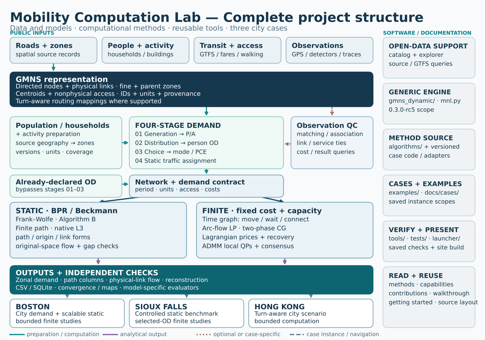
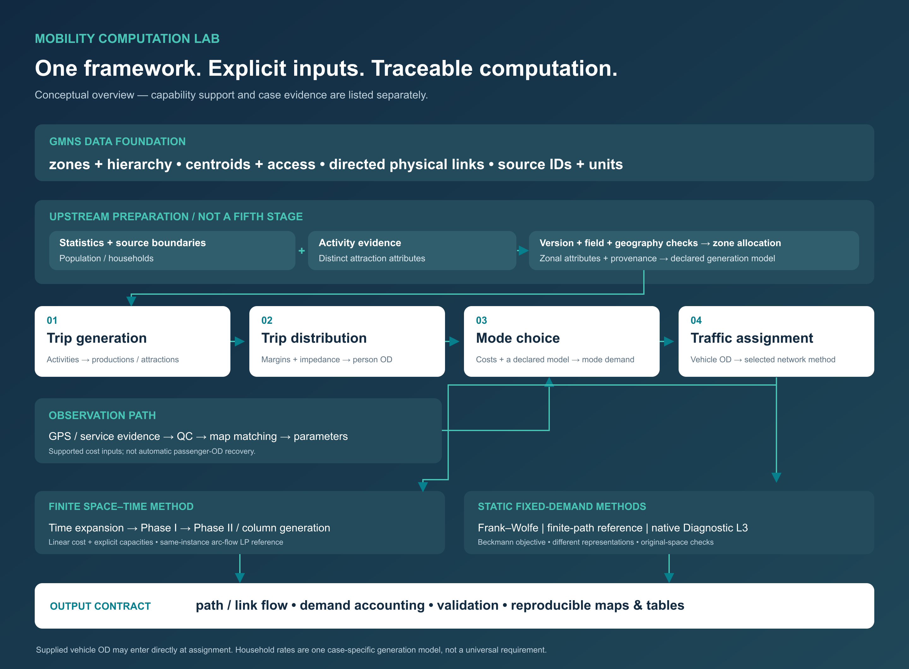

Architecture
City modelling is the organizing workflow
Mobility Computation Lab centres on networks, zones, demand, evidence and network computation. Data catalogs support this workflow; they do not replace a city model. The city workflow distinguishes currently executable components from extensions.

Four source groups, GMNS representation, demand and observation preparation, two mathematical branches, outputs, three cases and reusable software/documentation entry points. Full-size SVG · PNG · Model and typed edges · Source and renderer hashes.


The figure is a conceptual module map, not a claim that one executable runs every stage. The solid paths mark supported preparation, computation or analytical output; dotted paths are optional/case-specific, and dashed paths identify case instances or navigation. Its observation branch represents QC and matching/association with physical links or service records—not an automatic GPS → observed OD → calibrated model route. The declared-OD entry bypasses demographic preparation and stages 01–03. Stage 04 is the documented static road-assignment route; bounded finite time expansion is a separately prepared optimization instance. The capability table gives exact city and method scope.
Retained earlier framework illustration

This earlier conceptual illustration remains available as a distinct historical presentation; it is not a substitute for the complete, source-grounded module map above.
Network, zone-access and demand interface
app/src/gmns_dynamic/external_network_input.pyreads the current explicit model profile.app/cases/contains self-contained synthetic regression inputs, not new city datasets.schemas/and data contract document IDs, field mappings, units and model conditions.
The generic engine starts with prepared network and demand tables. Boston and Hong Kong also have separately documented, case-specific source, zone, demand and observation workflows; their results do not turn registry names into model-ready cities or make those steps automatic in the generic CLI.
Assignment and optimization
app/src/gmns_dynamic/explicit_network_workflow.pyprepares the explicit space–time problem.app/src/gmns_dynamic/run_full_cg_v1.pyretains the Phase-I/Phase-II column-generation engine.tools/mnl.pyis the network command entry point.algorithms/static_fw/is a separate static Beckmann / Frank–Wolfe implementation.
Do not compare these models as if a shared CSV vocabulary made their objectives, capacities or time definitions identical. Official tap-b Algorithm B integration and bounded Lagrangian/ADMM results have their own documented method scopes; native internal Policy Bush state inspection remains a research extension. The retained tools/mnl.py entry is the generic 0.3.0-rc5 engine, not an automatic reproduction route for later separately versioned Boston and Hong Kong CG cases.
Supporting mobility data
src/mobilitylab/omdv/ contains selected authorized city/catalog normalization and exact name/country matching functions. src/mobilitylab/data/catalog_city_workflow.py and tools/mcl_data.py call them on user-supplied local files. This is independent of the fixed aggregate evidence catalog.
catalog/open-data-evidence.json, omdv-provenance.json, omdv-authorized-files.json and interoperability-sources.json preserve summaries, sources and reuse scope. The OMDV study does not supply city OD or GPS observations to the solver automatically.
Results and visible verification
launcher/ verifies saved outputs. catalog/datasets.json and benchmark-results.csv identify bundled examples and historical benchmark records. The visual gallery indexes the retained scientific figure families and their source records; data cards preserve interpretation limits. Original-space flow reconstruction, saved-result SQLite/CSV queries and model-specific independent checks are distinct output routes, not a single universal optimality certificate.
Maintain the working implementation
The existing numerical and data-tool source layouts remain unchanged. The GitHub README and Pages homepage are different presentations of the same project; both must preserve the city-network focus and lead to real tools and figures. tools/build_site.py is the Pages generator, not a replacement for root README.md.
Source-grounded module index
The linked table is generated from the same module model as the SVG/PNG. It includes every drawn module, its actual public source/data entry, the documentation route, and the scope qualifier. A source path is evidence of an implementation or data record, not proof that every city uses it.
| Diagram module | Actual source or data entry | Documentation and demonstrated scope |
|---|---|---|
spatial_inputs · Roads · boundaries · zones |
catalog/, examples/boston/ |
data contract, boston gmns exchange. source-dependent; not every city uses the same layers |
population_inputs · Population · households · activity |
docs/datasets/boston-population-households.md, docs/datasets/hong-kong-gmns.md |
city workflow. Boston and Hong Kong have distinct bounded preparations; not Sioux Falls |
transit_inputs · GTFS · fares · walking access |
docs/datasets/boston-four-step-sources.md, docs/cases/hong-kong-four-stage.md |
city workflow. case-specific service snapshots and engineering assumptions |
observation_inputs · GPS · detectors · trajectories |
docs/datasets/boston-behavior-feedback.md, docs/methods/hong-kong-evidence-contract.md |
city workflow. observations differ by city and access rights |
gmns · GMNS and representation layer |
schemas/, app/src/gmns_dynamic/external_network_input.py, docs/datasets/boston-gmns-exchange.md |
data contract, city workflow, hong kong gmns. core GMNS vocabulary plus documented project extensions; transit and observations are not all core GMNS |
population_preparation · Population / household / activity preparation |
docs/datasets/boston-population-households.md, docs/cases/hong-kong-four-stage.md |
city workflow, architecture. case-specific, not a universal city compiler |
four_stage · Four-stage demand and static assignment route |
docs/city-workflow.md, algorithms/mode_choice_conditional/, algorithms/static_fw/ |
boston, hong kong four stage. Boston limited and Hong Kong engineering-scenario branches; Sioux benchmark bypasses stages 01–03 |
observation_association · Observation QC and matching / association |
docs/datasets/boston-behavior-feedback.md, docs/datasets/boston-gmns-exchange.md, docs/methods/hong-kong-evidence-contract.md |
city workflow. exploratory feedback is optional and case-specific |
declared_od · Already-declared OD inputs |
examples/scalable_vehicle_fixture/, docs/RUN_YOUR_OWN_GMNS.md |
sioux falls. supported direct-vehicle static entry; finite cases have separate demand preparation |
common_contract · Network + demand preparation |
schemas/, tools/mcl_assignment.py, app/src/gmns_dynamic/explicit_network_workflow.py |
data contract, methods. common concepts, not one universal runner |
static_branch · Static traffic assignment |
algorithms/static_fw/, algorithms/origin_based_algorithm_b/, algorithms/finite_path_reference/, algorithms/path_compression/diagnostic_l3/ |
methods, origin based algorithm b, boston assignment. method/city adapter and numerical acceptance vary by case |
finite_branch · Finite time-expanded optimization |
app/src/gmns_dynamic/run_full_cg_v1.py, algorithms/distributed_assignment/lagrangian_r2/, algorithms/admm_r2/, docs/assets/hong_kong/full_stack_r5/ |
space time cg, distributed assignment, admm space time. separately versioned bounded case instances; not automatic calibrated DTA |
results · Outputs, analysis and independent checks |
launcher/, tools/mcl_results.py, examples/boston/run_saved_example.py, docs/visualizations.md |
capabilities, visualizations, getting started. checks have method-specific meanings, not one universal optimality certificate |
boston · Boston |
examples/boston/, docs/cases/boston.md |
boston assignment, boston space time. real-city sources with distinct static and ten-demand finite cases |
sioux · Sioux Falls |
examples/sioux-falls/, docs/cases/sioux-falls.md |
sioux space time, sioux admm. supplied benchmark OD, not a demographic city compiler |
hong_kong · Hong Kong |
examples/hong-kong/, docs/assets/hong_kong/full_stack_r5/ |
hong kong, hong kong space time. not all methods have accepted city results |
data_support · Open-data support |
src/mobilitylab/data/, catalog/, tools/mcl_data.py |
open data, open data explorer, data tools. source evidence, not citywide model inputs |
generic_engine · Retained generic engine |
app/src/gmns_dynamic/, tools/mnl.py |
getting started, source layout. 0.3.0-rc5 generic engine only |
method_code · Method implementations |
algorithms/, docs/assets/hong_kong/full_stack_r5/ |
methods, source layout. versioned method/case routes, not one CLI |
case_code · Cases and examples |
examples/, docs/cases/ |
capabilities, full walkthrough. three distinct city roles |
verification_code · Verification and presentation |
tools/, tests/, launcher/ |
visualizations, getting started. documentation builds never run scientific solvers |
public_navigation · Public navigation |
docs/methods.md, docs/capabilities.md, docs/contributions.md, docs/full-walkthrough.md, docs/getting-started.md |
architecture, source layout. navigation is not executable model flow |